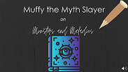

Creative Writing
Creative Writing is an art form that lets you break free of all restraints; it's a genre where anything goes. But Creative Writing isn't just something that deals with fantasy, with everything that can't and isn't in the here and now. Creative Writing is the the truth and the lie, what could be and what is, the hope and the disappointment. It lets us escape our reality or helps us face it.
Creative Writing is everything.
Table of Contents
Escape to DaydreamA short video dramatizing a daydream I frequently had in 7th grade. See the accompanying "Anywhere but Here" article on the Professional Writing page. |
|
|  | Muffy the MythslayerAn episode of a fake podcast called "Muffy the Mythslayer" where the hosts investigates and busts common mythconceptions. See the accompanying "Of Monsters and Maladies" article on the Professional Writing page. |
The Disasters of an Untried Traveler in KoreaA memoir about the bad days I had while visiting South Korea. It discusses feelings of fear, embarrassment, disappointment, and panic I experienced while on my trips. But it's also about how the good experiences easily outweigh the bad. Because while making the safe choices can protect you from negative consequences, it also keeps some of the best experiences that life has to offer at a far distance. |
|
GoneWaiting is something I've never really been good at. The same goes with not knowing. Sometimes, though, that's all life is. Waiting and not knowing. Waiting to live. Waiting to die. Not knowing when or if or how or why those things will happen. While you're waiting, you can fill the space left empty by the not knowing…and what you fill the space with is much worse than anything you could think of. Because you'll fill the space with hope. |
|
Fairy Tale My AssEverybody has a limit to what they can take. And I've reached mine. I'm sick and tired of everyone thinking that I'm some pathetic chick who can't save my life to…well…safe my life. Because I most certainly can. And I most certainly have. So I'm going to tell you the true story. It is my story, after all. If anybody has the right to tell it, it's me. And for once, it's going to be told right. |
|
Please Don't CryAn unfortunate consequence of social networking sites is that you open the door to creepers. Thankfully getting rid of these stalkers is usually easy. Just block them, and that's it. It's done. But my stalkers are a hell of a lot harder to get rid of. They don't have Facebook pages, and even if they did, I don't think that magical "block" button would work. Pretty much the only thing I can do is ignore them. Pretend they don't exist. Pretend that I'm normal. Because my stalkers are ghosts. |
|
Tired Hobos Like to Break Down DoorsI've always been slightly paranoid. I don't know if it's hereditary or what, but I'd often contemplate the likelihood of a robber breaking into my house. I usually decided that the chances were slim to none. I was wrong. |